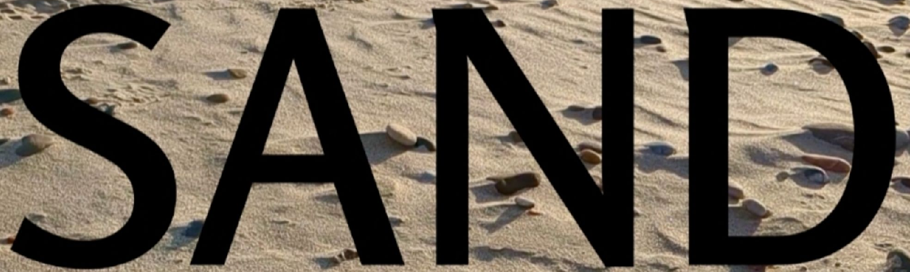

→ Click here if you've paid!
TODEPOND PONDCAST: Tease open
Welcome back. It's time for another weekly edition of the...
🐸 TODEPOND PONDCAST 🐸
What's new this week?
Open
Talk preparations are underway. I've been developing the keynote I'm giving at Heart of Clojure. I've been working through what content would go into the talk, and I now have a loose string of stories and learning to connect up. Essentially, I don't want to share the things that I have done. Instead, I want to share the moments where other people in the wider community have surprised me by getting involved or contributing something.
And the theme of the talk will be openness and what it means— What it means to be open. As in, what it means to be open source— not just your code, but to also work in public with an open door, and how it has taught me to be open minded to the possibilities and benefits— surprising moments it can cause.
This weekly update I give is part of that, I suppose! I try to be open about what I'm working on, no matter how slow or fast it's going, and it sometimes feels like work, and effort, and embarrassing. But it's opened me up to a lot of good, and I'd like to share what I've learned about that.
Tease
I have continued to work on the next video, Top 99 Ways To Make Sand. And right now, I'm focusing entirely on getting a teaser trailer ready for it, which will basically be the first section of the video (with some minor tweaks to avoid spoilers).
I'm looking forward to sharing some of Ivan Reese's original music in it. I think it'll add some intrigue at this point.
And of course, I'll introduce the premise of the episode too, which is, of course, making sand in 99 different ways.

Tode is still asleep
I made another silly little bonus episode this week. It's what I imagine tode is dreaming of as they're asleep. It really isn't much. Just some clips and sounds I made.
One episode
And hey, I'll be doing another livestream this weekend, on Saturday, at 5pm London time.
The last one was a bit of a mad experience, where I ended up recursively reacting to past self hundreds of times, and it took over four hours.
This time, however, I'll just be reacting and adding commentary over my first ever episode, and then I'll be leaving, and nothing else will happen. It'll just be one episode, so it'll be quite short. Don't miss it.
Of course, I thank you for your continued support. I couldn't do any of this without you, so I'm so pleased you're here. Maybe see you at the livestream, or if not, see you next week. I hope you have a good one, wherever you are, and whatever you're doing. 🐸
Days since tode fell asleep: 589Days since bot went missing: 554
Days since berd flew away: 217
Back to the pondcast.